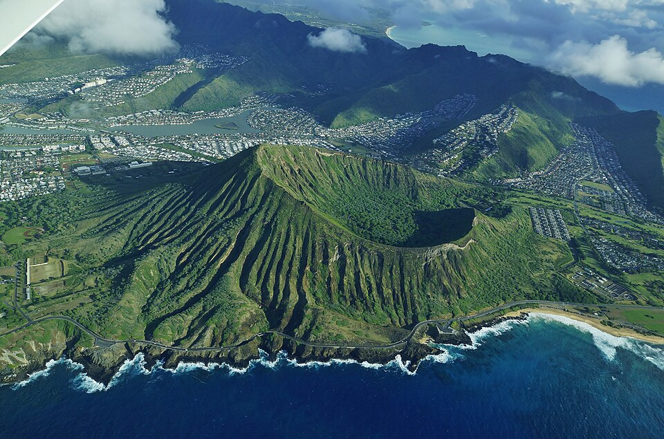

Koko Crater
Place: Koko Crater, East Honolulu, Oʻahu
Type: Volcanic tuff cone / hiking destination / botanical garden
Story it tells: A volcanic landmark whose modern name recalls red earth while older Hawaiian traditions preserve deeper stories tied to Pele, Kamapuaʻa, and the landscape of Maunalua.

Koko Crater is a large volcanic tuff cone in East Honolulu overlooking Hawaiʻi Kai, Hanauma Bay, and Maunalua Bay. Together with nearby Koko Head, it forms one of the most recognizable landmarks on Oʻahu. The name koko can mean "blood" or "red earth," a likely reference to the reddish volcanic soils within the area. Rising more than 1,200 feet above sea level, the crater is one of the best-preserved volcanic features created during the rejuvenation stage of the Koʻolau Volcano.
The crater was known by older Hawaiian names including Kohelepelepe and Puʻu Mai. Kohelepelepe is associated with a moʻolelo involving Pele, goddess of volcanoes, and Kamapuaʻa, the shapeshifting pig god. In the story, Pele's sister Kapo intervened in a conflict between the two and cast her genital form from Hawaiʻi Island to Oʻahu. The resulting imprint was said to have formed the crater now known as Koko Crater. Like many Hawaiian place stories, the account connects geography, genealogy, and the landscape into a single narrative.
Geologically, Koko Crater is part of the Honolulu Volcanics, a series of eruptions that occurred after the main Koʻolau shield volcano had formed. Nearby landmarks including Hanauma Bay, Koko Head, and Diamond Head were created during the same broad period of volcanic activity. Together they significantly define the southeastern corner of Oʻahu and the landscape surrounding Maunalua Bay.
One source of confusion is that many features associated with Koko Crater actually carry the Koko Head name. Koko Head and Koko Crater are separate volcanic cones, with Koko Head forming the coastal headland south of the crater. However, facilities located on or around Koko Crater's slopes, including Koko Head District Park and the Koko Head Shooting Complex, use the Koko Head name. As a result, many visitors assume the trail climbs Koko Head when it actually ascends the slopes of Koko Crater. The overlapping names reflect how the neighboring landmarks have long been viewed together as defining features of the overall landscape.
During World War II, the U.S. military constructed a tramway up the slopes of the crater to transport supplies and personnel to military installations near the summit. More than one thousand railroad ties were laid. Although the tracks no longer function, the route survives today as the popular Koko Crater Railway Trail, one of Oʻahu's most recognizable hikes, with incredible views of the surrounding area.
The crater also contains the Koko Crater Botanical Garden, established within the basin during the late twentieth century. The garden specializes in dryland and xeriscape plants, creating an unusual contrast between the crater's arid interior and the lush Koʻolau Mountains visible in the distance. Visitors today encounter a landscape shaped by volcanic forces, Hawaiian tradition, military history, conservation, and recreation all within a tight footprint.